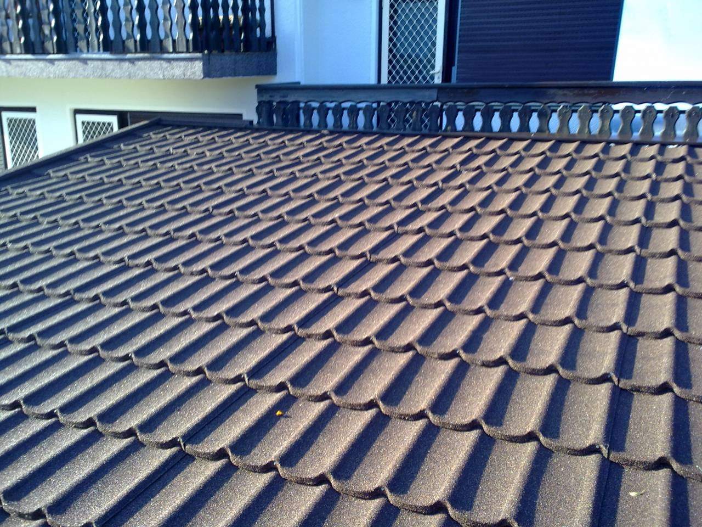
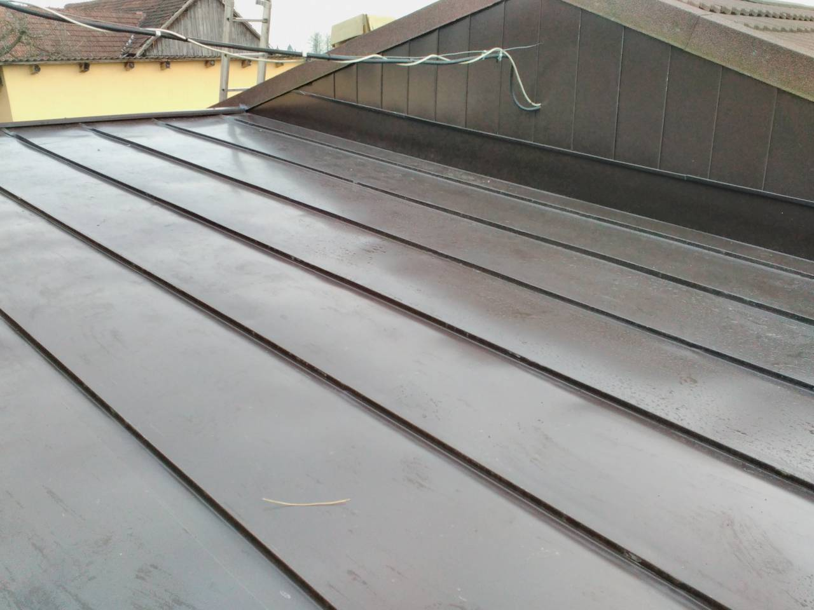
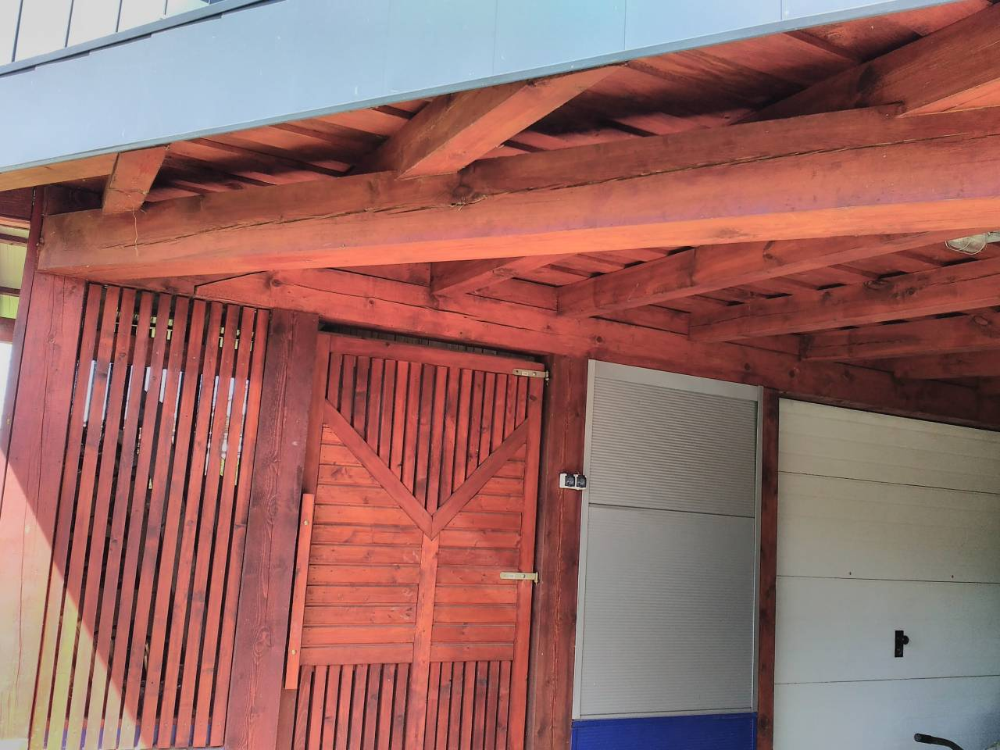
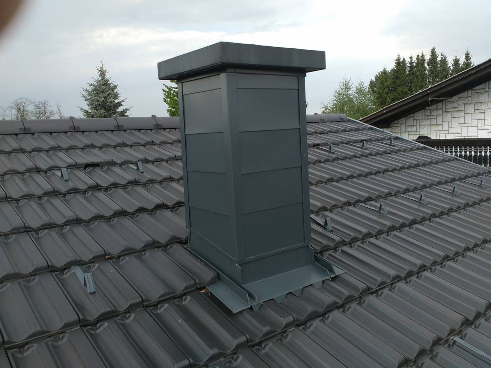

01 / Storitve
Kaj delamo
Od kritine do žlebov in ostrešja. Vse spodaj navedeno je iz opisa storitev podjetja.
01
Strehe in kritine
Strehe pokrivamo z jeklenimi kritinami, opečno kritino, tegolo, valovitimi salonitkami in drugimi kritinami.

02
Kleparski izdelki
Izdelava in montaža žlebov, raznih obrob, oblačenje napušča, strelovodi in podobno.

03
Lesene in kovinske konstrukcije
Izdelava lesenih in kovinskih konstrukcij ter ravnih streh.
04
Pergole in napušči
Izdelava pergol in raznih napuščev, vključno z oblaganjem napušča.

05
Frčade
Izdelava in obloga frčad, usklajena s kritino in napuščem.
06
Dimniki
Pločevinaste obloge dimnikov, usklajene z barvo kritine.
